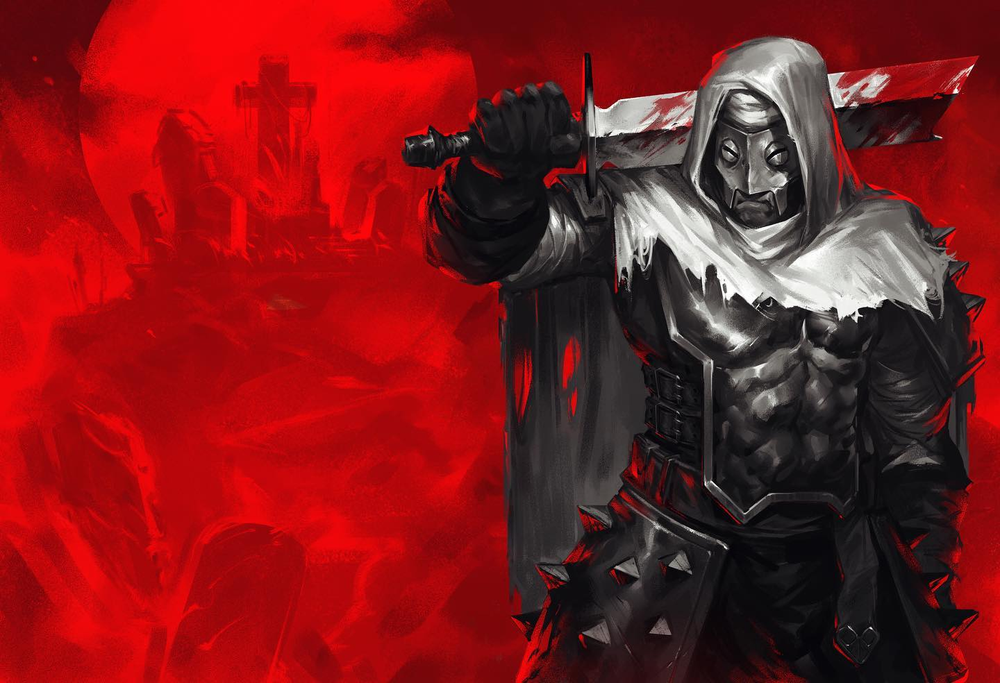
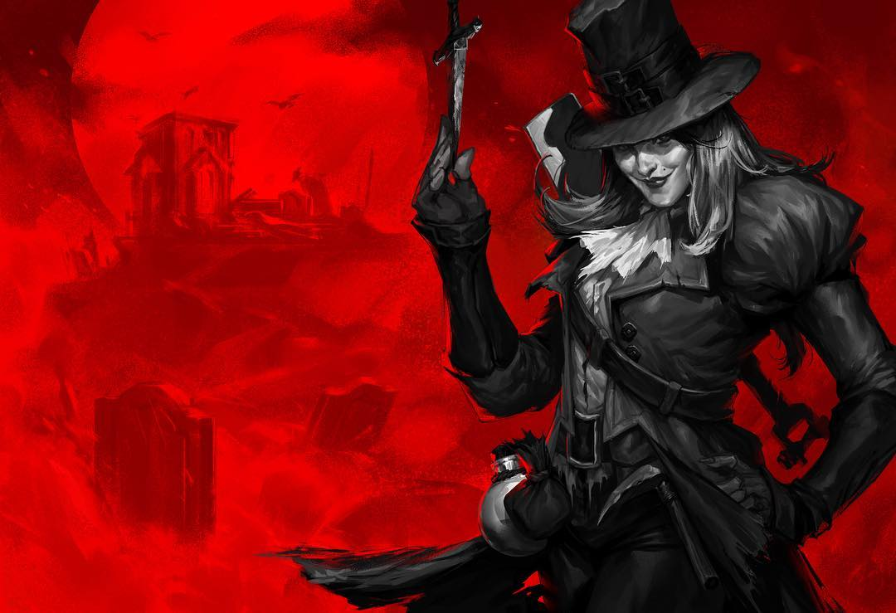
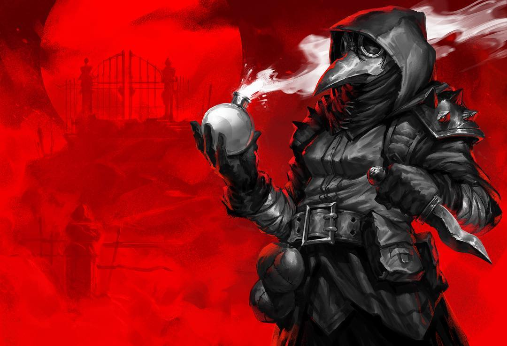
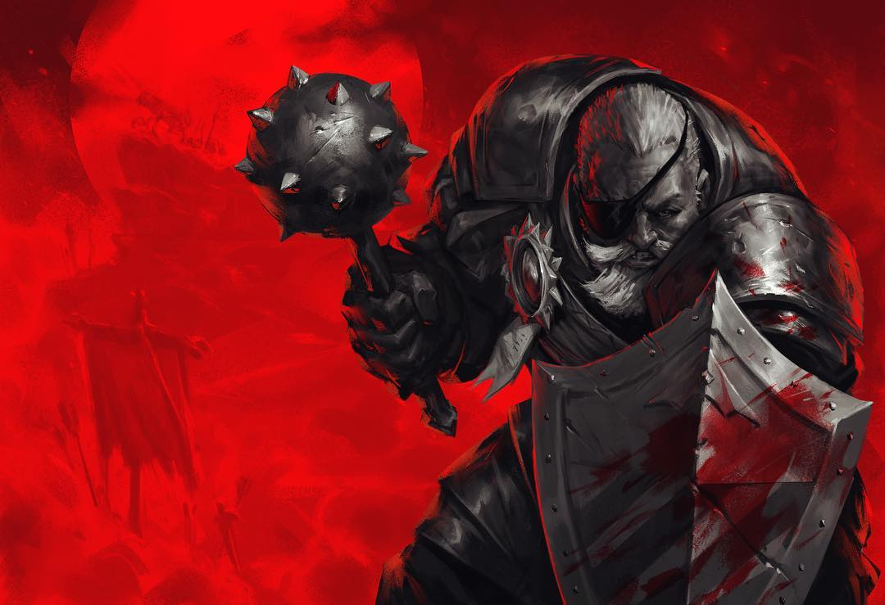
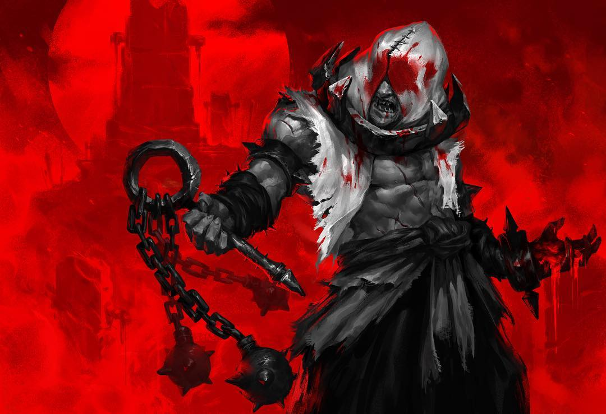
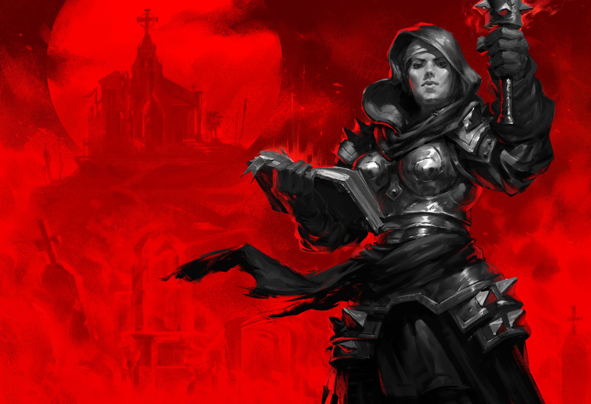

-
Leproso
Descrição
O Leproso, baseado no Rei Baldwin IV, foi um nobre rei por (infelizmente) um curto período de tempo antes de sua doença o impossibilitar de liderar seu povo.
-
Ladra de Covas
Descrição
Uma ex-aristocrata, perdeu todo seu dinheiro após o marido exigir ser enterrado com todas as suas joias e objetos de valor. Descobriu nisso a oportunidade de lucrar, desenterrando riquezas de corpos pútridos.
-
Médica da Peste
Descrição
Uma estudante de toxicologia e doenças da mesma área, a Médica da Peste se tornou obcecada em estudar o funcionamento de venenos e pragas e (na maior parte das vezes) utiliza cadáveres para testar as ações de suas misturar perigosas.
-
Soldado
Descrição
O Soldado é um veterano de guerra que já deveria ter se aposentado, mas as promessas de honra, riqueza e glória na Darkest Dungeon o convenceram a erguer novamente seu escudo para proteger seus colegas de profissão, além de sua maça para amassar alguns crânios.
-
Flagelante
Descrição
SANGUE E DOR AMORTECERÃO A MINHA CARNE E LIMPARÃO DE MIM MEUS PECADOS.
-
Vestal
Descrição
"Irmã de Batalha", a Vestal foi expulsa de sua ordem religiosa pelo mero fato de se interessar pelas relações amorosas de outras pessoas, o que é visto como pecado em seu monastério. Ela utilizará a luz divina e sua fé na Ordem da Luz para proteger e recuperar seus aliados em batalha.